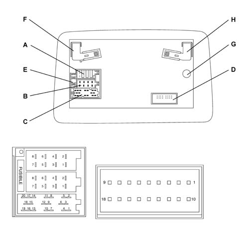

5580PO CONNECT POWER SUPPLY CHECK
- Path
- Test > 55 ELECTRICAL EQUIPMENT > 5580 SPECIAL ACCESSORIES > 5580P CONNECT PANEL > 5580PO CONNECT POWER SUPPLY CHECK
- Kind
- test / check procedure
- Applies to
- all engines; all production periods
- Interactive page
- https://sloeber94.github.io/elrnDB-fPnd/en/#/169001390
Applies to: all engines; all production periods
- With the ignition ON, check that the correct battery voltage is present between pins 4 and 8 of the 8-way Connect connector. If broken, check the wiring.
- Check that there is a permanent 12V voltage between pin 7 of connector A and earth.
- Check the condition of fuse E located at the back of the Connect. If burnt out, search for the cause of the problem and replace it.
- Disconnect the 8-way Connect connector B. Switch the Connect off and on. Check whether there is a component (CD Changer, amplifier, sound boxes, etc.) protecting the radio.
- If none of the above steps has highlighted problems with the signals and the Connect continues not to switch on then it is defective.

Connect pin out